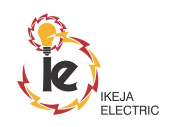

One franchise map
Lagos State context, five 2026 BU fills, and Undertaking outlines on hybrid satellite imagery.

IE · GIS Team · Live Network
Ikeja Electric · Powered by the GIS Team
Lagos boundary · 2026 BUs · UTs · feeders · DTs · ISS / TCN
Distribution transformers · public vs private
Boundary consolidation for 2026
Share of DTs whose register UT matches the 2026 polygon
Click a row to select that UT and zoom
| UT | BU | DTs | Pub / Priv | Agree % | Area km² |
|---|
Land area of each 2026 Business Unit
Largest UTs by polygon area in the current filter
Workload intensity by Business Unit
Public / private mix and ground vs other mounting
Old BU → NEW_BU_2026 where the name changed
Installed transformer capacity distribution
Count, corridor length, and mean in-own-BU share
Each point is a feeder (11 kV + 33 kV)
Share of feeder length inside its tagged 2026 BU / UT
Names follow DT register Feeder Name nomenclature
| Feeder | kV | BU | UT | DTs | km | In-own BU | In-own UT |
|---|
Ikeja Electric · Powered by the GIS Team
Enterprise spatial dashboard · same-tab replica
Hybrid satellite · Lagos boundary · BU fills · feeder corridors
Click a feeder to highlight it on the map
Powered by the GIS Team
In 2026, Ikeja Electric reorganised its distribution franchise from six Business Units to five. The Abule Egba Business Unit was dissolved and its service areas were absorbed by its neighbours — every transformer, Undertaking, and boundary reassigned, checked, and redrawn.
2,717 transformers changed Business Unit. 54 Undertakings became 38. And every one of the 20,789 transformers now has a clear home.
In 2026 Ikeja Electric collapsed six Business Units into five clearer territories so field crews, planners, and customer operations share one spatial truth. Every figure below is computed from the same DT register and polygon layers that power the live Intelligence and Coverage dashboards — no invented metrics.
Lagos State context, five 2026 BU fills, and Undertaking outlines on hybrid satellite imagery.
20,789 distribution transformers tagged to 2026 BU / UT with public vs private ownership.
418 feeders (11 kV + 33 kV) aligned to the new territories with length and DT load metrics.
Pre-2026 the franchise ran six Business Units and 54 Undertakings. The 2026 realignment dissolved Abule Egba, absorbed its service areas into neighbouring BUs (chiefly Ikeja and Akowonjo), and consolidated Oshodi and Shomolu from 11 Undertakings each down to 6 — producing five contiguous 2026 territories and 38 Undertakings.
13.1% of the network changed Business Unit assignment during the cut-over.
Undertakings consolidated for operational clarity while Ikeja grew from 8 to 10 UTs.
Abule Egba retired; every former polygon lineage remains auditable in the UT history fields.
Click a BU on the map or charts to filter the Intelligence dashboard to that territory.
Each 2026 Business Unit has a distinct spatial personality — dense urban cores, wide coastal territories, and mixed ownership profiles. Open a card to filter dashboards to that BU; labels appear on the map as you zoom.
Workload is read from the operational DT register: public vs private counts, transformers per square kilometre, and feeder corridors that carry that load. Click any bar or table row to focus the map and KPI filters.
| BU | UTs | DTs | Area km² | DTs / km² |
|---|
Quality is measured as register-to-polygon agreement: for each 2026 Undertaking, what share of transformers inside the boundary carry a matching 2026 UT assignment. Every UT clears 90%; most sit above 97%. Hybrid imagery, feeder fidelity, and ownership splits close the loop between map and register.
BU and UT polygons with Lagos State context on Esri hybrid satellite + labels.
11 kV and 33 kV corridors scored for in-own-BU / in-own-UT fidelity.
Capacity bins, ownership, and reassignment analytics from the DT register.
The GIS Team assigned each of the 20,789 transformers a 2026 Undertaking and Business Unit, then redrew boundaries so every Undertaking records which former Undertakings it was formed from — keeping the history of every boundary auditable. Customer identifiers were excluded from published layers.
QGIS / ArcGIS Pro for geometry · curated JSON for the Vercel dashboard · Leaflet + Chart.js for the story.
Lineage fields on UTs preserve pre-2026 ancestry for audit and field briefings.
No customer account identifiers in published map or analytics layers.
Focused on electricity, Federal Government power-sector policy, AI/ML for Nigerian DisCos, GIS, and GeoAI. Click a source tab to filter — the same selection applies on Intelligence and Coverage.
Jump into the interactive dashboards: multi-select BU / UT / feeder / DT filters, hybrid satellite maps, clickable charts and tables, dual Excel export, and PDF snapshots. Reset clears focus across views.
KPIs, network geography, DT register analytics, feeder fidelity, and live feeds.
Replica command view with DT density, interactive insight cards, and feeder drill-down.
PDF report of both dashboards, or Excel workbooks for UTs, BUs, feeders, and DTs.